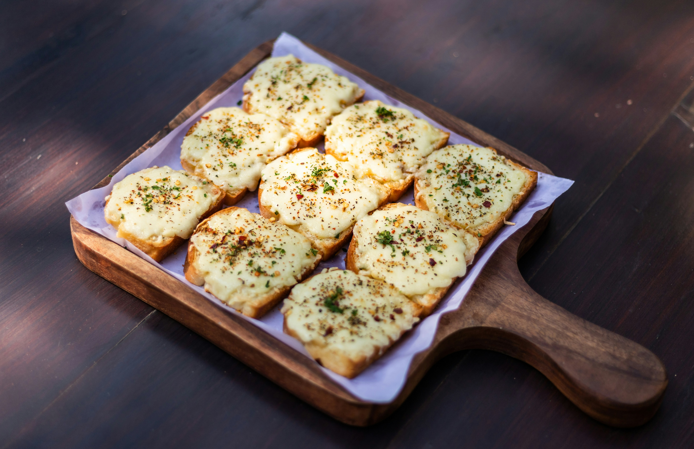

Garlic Bread

Description
Easy enough to make and tasty enough to eat, done in minutes with least cooking time.
Can be taken for breakfast and snacks on any dayyyy.
Ingredients
-
1/4 cup butter
- 1/2 tablespoon garlic powder
- 1/2 tablespoon dried parsley
- 1/2 loaf Italian bread, cut into 1/2-inch slices
- 1/2 package shredded mozzarella cheese
Steps
- Gather all ingredients.
- Preheat the oven to 350 degrees F (175 degrees C).
- Melt butter in a small saucepan over medium heat; stir in garlic powder and dried parsley.
- Place bread slices on a medium baking sheet. Using a basting brush, brush bread generously with melted butter mixture.
- Sprinkle bread with mozzarella cheese and any remaining butter mixture.
- Continue baking until cheese is melted and bread is lightly browned, about 5 minutes.
- Ready to serve.
Home